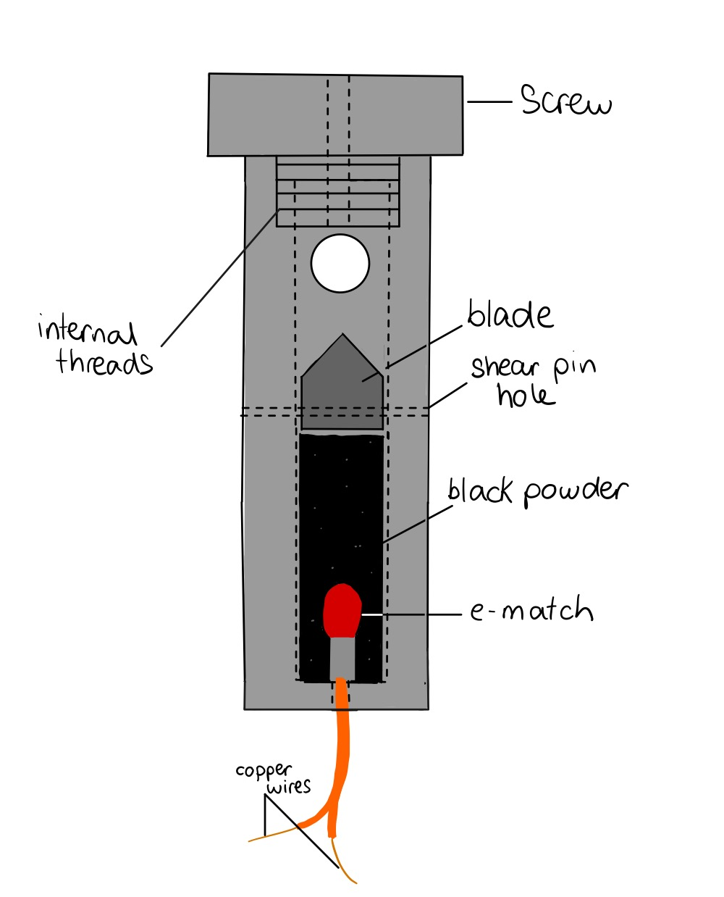
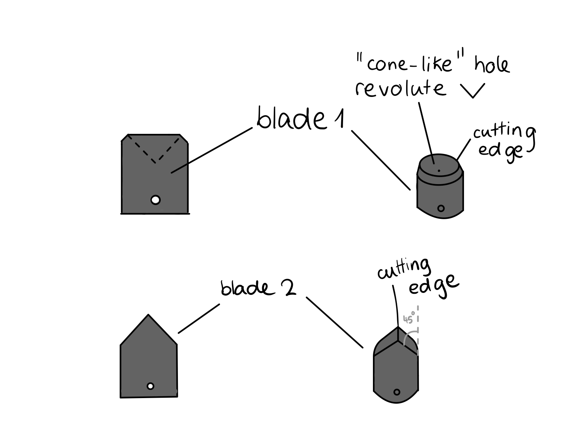
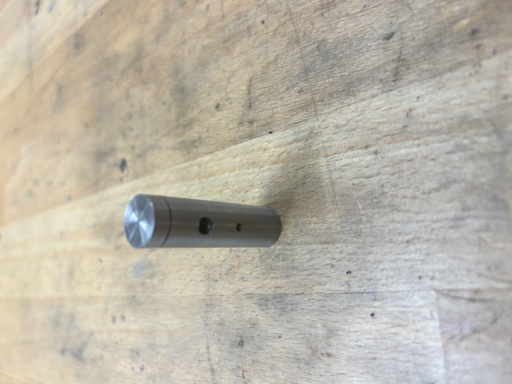
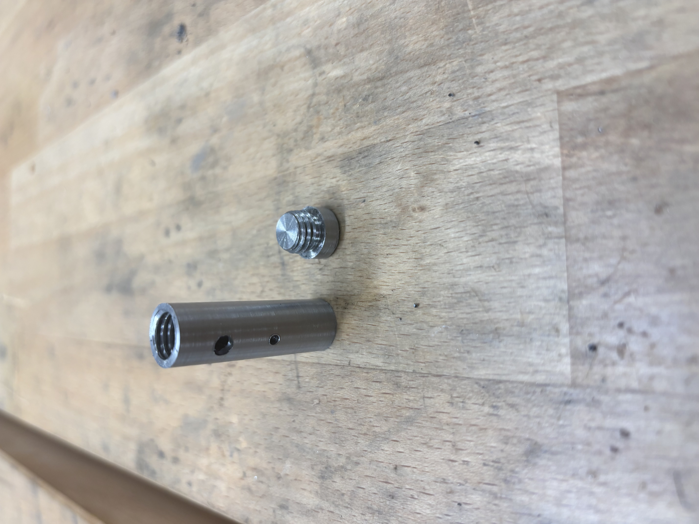
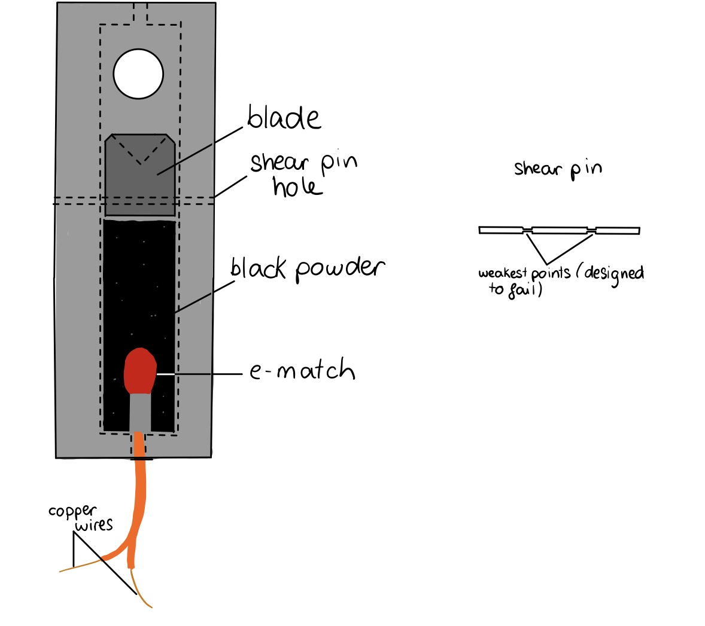
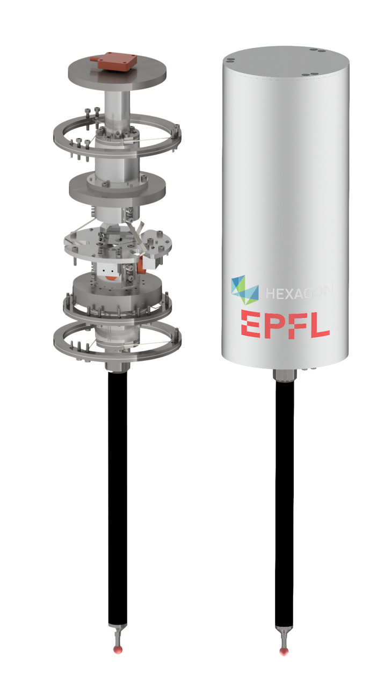
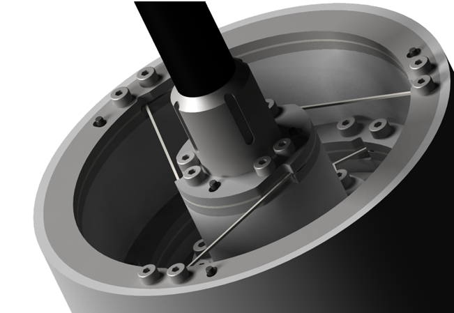
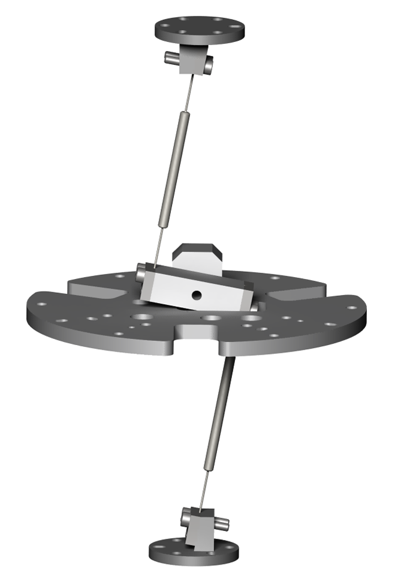
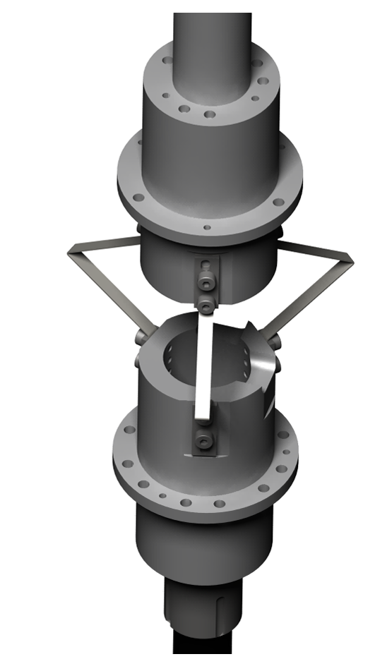

About
EPFL Microengineering student interested in embedded systems, robotics, hardware design, and applied software.
Projects
Line Cutter - EPFL Rocket Team
Date: 2024–2025
Project: EPFL Rocket Team Recovery System
Technologies used
- Design(3D/2D) on SolidWorks
- Manufacturing: Manual lathes, Drill presses, tap/ die
- 3D Printing using Prusa MK4 printers and PrusaSlicer
Designed, manufactured, iterated and tested a compact pyrotechnic line cutter for the EPFL Rocket Team recovery system. The device uses an e-match-triggered black powder charge to drive a guided blade through high-strength Dyneema reefing lines, triggering the second phase of the rocket’s descent. The system was flown and validated at the 2025 European Rocketry Competition where the team reached second place thanks to a successful recovery.
Several blade concepts were explored before manufacturing the final version. The sketches below show early cutting-edge iterations, including flat and revolved blade geometries, with the goal of improving line capture, cutting efficiency, and reliability.
Line Cutter Design Iteration
The first line cutter design had threads positioned in the center of its body to allow for the positioning of the blade. The blade in itself was cylindrical: it consisted of a spot drill hole with a 45° chamfer to create a cutting edge. Although not ideal, this design was necessary as we were unable to orient the blade to cut the line at 45° for our second device, which led us to the use of shear pins. Additionally, the threaded cap was added to allow for a smaller, more compact and light device, as the manufacturing of the external thread with a die was only possible through the creation of a relief in the line cutter body, which resulted in a very thin wall unable to withstand black powder explosions.
The second design iteration, which is the one that was manufactured and flown, included a blade with a sharper, flat, cutting edge and a more robust body with the threads positioned on the top of the device. This screw-like cap was subjected to far less stress during the explosion, allowing us to create a more compact and robust device without the need for a relief in the body. Additionally, the shear pin hole allowed the blade to always be perpendicular to the line, and was extremely easy to manufacture, as it only consisted in a pin, with two small diameters reduced with a lathe.


Testing
The video below shows an experimental validation test of the line cutter mechanism among many others. The device in this test is held by a clamp and the dyneema line is not under tension, as to validate the device even in the worst-case scenario. The blade successfully cuts through the line in a repeatable way, demonstrating the reliability of the design and manufacturing process.
Manufactured Prototype
The closed and open prototype photos show the manufactured line cutter body, threaded cap, side access holes, shear-pin hole and internal cavity used to integrate the blade and pyrotechnic charge.


Internal Working Principle
The internal diagrams illustrate the working principle of the device. An e-match is connected through copper wires and embedded in the black powder charge. When triggered, the pressure generated by the charge pushes the blade upward through the line path.
The blade is initially constrained by a shear pin with intentionally weakened sections. During activation, the pin fails at these designed weak points, allowing the blade to travel and cut the reefing line in a controlled and repeatable way.

FlyForce - 3-DOF Force Sensor
Date: Spring 2025
Authors: Pauline De Baets, Stanislas Dupanloup, Emmard Frangopoulos, Noé Ventura, Tim Vial
FlyForce is a precision mechanical design project focused on the development of a three-degree-of-freedom force sensor based entirely on compliant mechanisms and flexible guidance systems.
The objective was to design a probe capable of measuring the contact force between a stylus and a part in all spatial directions while remaining insensitive to gravity orientation, linear accelerations, and rotational disturbances of the base.
The mechanism combines compliant membranes, force and moment balancing, capacitive sensing, and elastic deformation to create a frictionless measurement system with three controlled degrees of freedom: two rotations (rx, ry) and one translation (z).
This project was devided in two main phases: The first important phase was the design of mechanisms with 3 degrees of freedom, during which 4 different architectures were explored and roughly implemented (Grübler Mobility, hyperstaticism, manuacturability/feasability). Each of those were then evaluated and compared to be implemented in depth in the second phase (Force and moment balancing, rigidity calculations and compensation, reduced mass, captor placement, 3D and 2D etc). Much calculations, optimization and iterations were involved to meet the specifications of the project.
The final mechanism achieved stiffness values close to the target specification of 5 N/mm in all directions while maintaining a highly precise force resolution using capacitive displacement sensors.
This project significantly strengthened my experience in compliant mechanism design, precision engineering, dimensioning, balancing systems, and design iteration under industrial constraints.
Complete Assembly
The image below shows the complete assembly of the FlyForce sensor. The internal structure is entirely based on flexible guidance systems instead of conventional bearings, greatly reducing friction.
The lower section contains the stylus support and compliant membrane used for the probe guidance. The upper section contains the balancing mass and the force/moment balancing mechanisms. Capacitive sensors positioned around the moving bodies measure the small deformations of the mechanism in order to reconstruct the applied force.

3-DOF Flexible Guidance
The probe guidance system is based on compliant membranes implemented using three equatorial flexure rods. This configuration constrains the mechanism to exactly three useful degrees of freedom: rotations around x and y, and translation along z.
The elastic deformation of the flexures provides smooth, repeatable motion while preserving very high positioning precision.
This guidance architecture was one of the key elements enabling isotropic stiffness behaviour and accurate force measurements in all directions.

Force Balancing Mechanism
One of the major challenges of the project was making the sensor insensitive to gravity orientation and base accelerations.
The mechanism shown below implements the balancing system for the z-axis translation. Two slender rods connect the moving probe assembly to a central inversion lever mounted on a compliant pivot.
When the stylus moves upward, the balancing mass moves downward with an opposite displacement. This compensates the forces generated by gravity and significantly reduces parasitic effects during operation.
The balancing mechanism was carefully dimensioned to preserve the required compliance while minimizing added stiffness and assembly complexity.

Moment Balancing System
The rotational balancing system compensates angular moments generated during probe motion around the x and y axes.
The two main moving masses are connected through three compliant L-shaped flexures arranged at 120°. These flexures force the balancing mass to rotate in the opposite direction of the probe assembly while still allowing independent translation along z.
This architecture enabled rotational balancing without introducing additional friction or overconstraining the mechanism. It also represented one of the most original aspects of the project because it combines rotational inversion and translational filtering in a compact compliant structure.
Significant design effort was dedicated to the geometry, positioning, and stiffness optimization of these flexures in order to achieve the target rotational stiffness while maintaining manufacturability.

Mechanical Drawings
The complete set of 2D technical drawings made by Stanislas Dupanloup and Tim Vial usable for manufacturing and assembly is available in the downloadable folder below.
Download the 2D drawings zip file